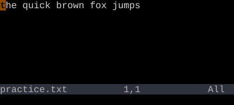
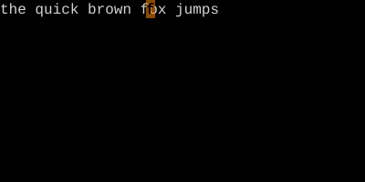
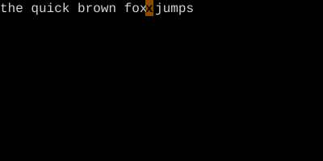

f{c} jumps to the next {c} on the line; F{c} jumps to the previous one. t{c} stops one character before; T{c} stops one character after. ; and , repeat in the same and opposite directions.
/ is overkill for jumping to a paren on the same line. f{c} jumps to the next {c} without ever leaving the line. F jumps backward. t ("till") stops one short. Then ; repeats the jump.
To next occurrence of {c}
Key
Note
f
{c}
To previous occurrence of {c}
Key
Note
F
{c}
Up to (but not on) next {c}
Key
Note
t
{c}
Up to (but not on) previous {c}
Key
Note
T
{c}
Repeat last f/F/t/T in same direction
Key
Note
;
Repeat last f/F/t/T in opposite direction
Key
Note
,
f — find character forwardF — find character backwardt — till character forwardT — till character backward; — repeat, — reverse repeat
Reference
Key
Lands on
Type
f{c}
Next {c} on line
Inclusive
F{c}
Previous {c} on line
Exclusive
t{c}
Char before next {c}
Inclusive
T{c}
Char after previous {c}
Exclusive
;
Repeat last find (same direction)
Same as original
,
Repeat last find (opposite)
—
Worked example — f and t
Inline character search.
Step 1 ·

Step 2 · ff · ff — find 'f' on this line.

Step 3 · 0tx · tx — till x: stops one before.

f lands ON the char; t lands JUST before. ; repeats; , reverses. Operator-friendly: dtx deletes up to but not including 'x'.